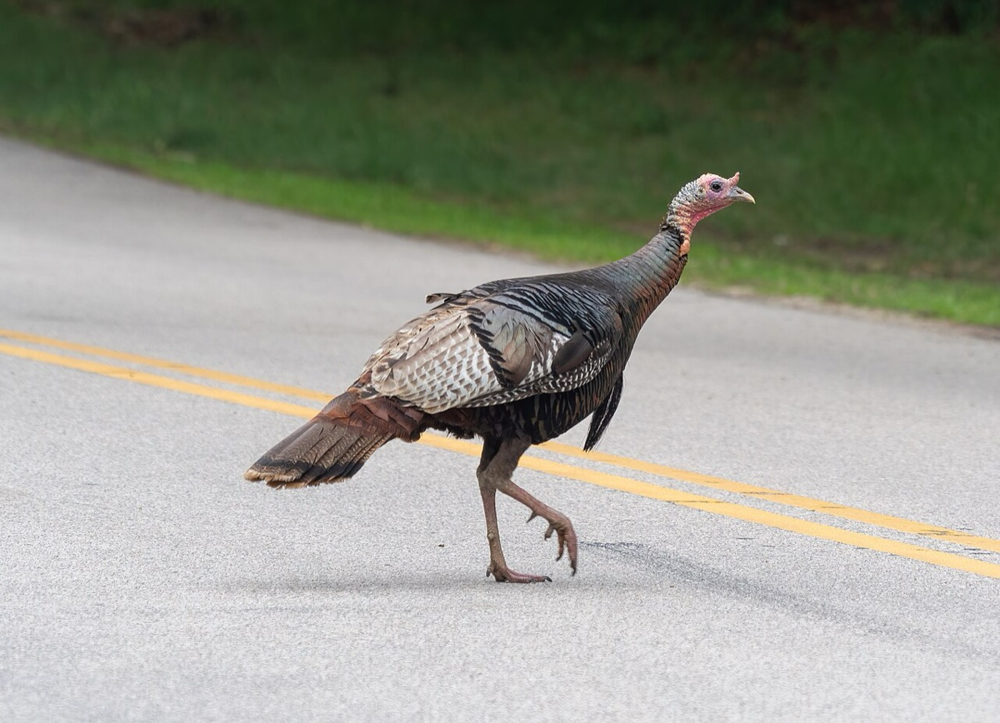
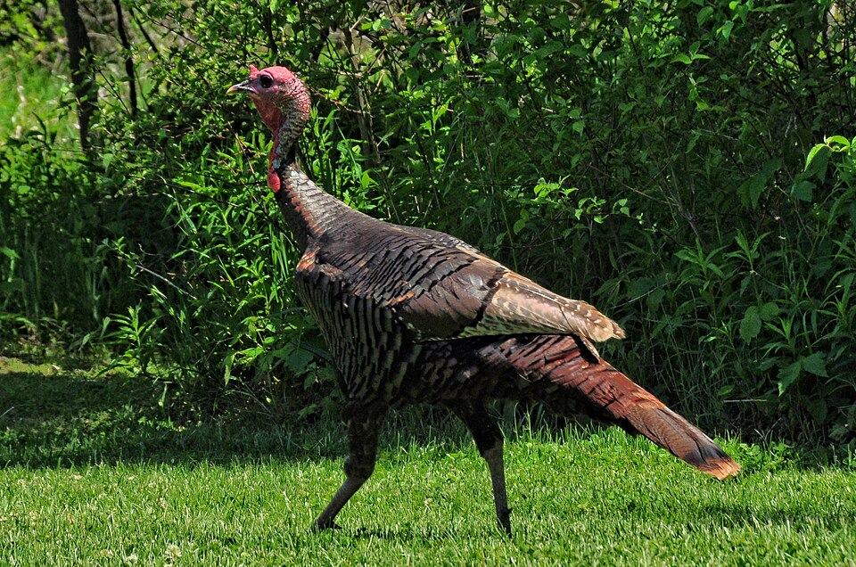

Wild Turkey
Meleagris gallopavo silvestris


Listen
Call: a 25-second clip, cut from a 29-second recording (trimmed, with a short fade-out, and saved as a small MP3), so it plays without an internet connection. Recording by Jonathon Jongsma, CC BY-SA 3.0, on Wikimedia Commons, where the whole recording is (an internet connection is needed to open it).
- Also called
- Eastern wild turkey
- Kind
- bird · Phasianidae
- Native to Vermont
- yes
- Legal status
- Big game under Vermont law with spring and fall seasons whose dates change each year; reintroduced in 1969 and 1970 (checked 2026-10-30)
Names
Eastern wild turkey, Meleagris gallopavo silvestris. Gone from Vermont by the late 1800s after logging and farm clearing; 31 turkeys relocated from New York in 1969 and 1970 rebuilt the population to an estimated 50,000, more than its ancestral range in the state.
Range and habitat
A forest game bird associated with mature hardwoods of mast-producing trees such as beech and oak, mixed with fields. In good habitat a flock stays within less than 1,000 acres; in poor habitat it may range over 4,000 acres. Good habitat has varied forest ages, mast hardwoods that are open under the canopy, clearings and openings, groups of conifers and farmland worked into the forest.
How to identify (by season; look-alikes and the key difference)
The Landowner's Guide chapter does not describe the bird's appearance.
Through the year
Dates are typical for Vermont and shift with elevation and year; "approximate" means the source gave a season and the dates are a translation of it.
| When | What | Look for | What to do | Dates |
|---|---|---|---|---|
| Jan 1 to Mar 15 | sign (watch) | Large flocks (up to 100 are sometimes seen in late winter). Food is hard to find under more than a foot of snow, so turkeys look for south-facing slopes and snow-free spring seeps where they scratch for nuts, seeds and insects. | approximate | |
| Apr 1 to May 15 | calling (watch) | The breeding cycle begins in April: males gobble and strut to attract hens; edge openings and forest roads are used for courtship displays. | stated | |
| Apr 15 to Aug 1 | nesting (avoid) | Nesting season (mid-April to August 1) for turkeys and other ground nesters: avoid brush clearing in reclaimed fields and brushy areas, and delay mowing hayfields until August. | stated | |
| May 20 to Jun 30 | young (watch) | Chicks usually hatch in late May. The hen and poults use sunny clearings, pastures and grassy openings intensively to find insects; the poults are vulnerable to cold, wet spring weather. | stated |
Signs on the land (tracks, scat, browse, nests, holes, calls)
- Nests: a slight depression in the forest litter, well hidden by dense plants, often in thickets, brush piles, fallen trees or at the base of trees between root flares.
- Winter feeding sign: scratching through snow for nuts and seeds; activity at snow-free spring seeps.
- Roosts: large-diameter trees with strong horizontal branches; white pine and hemlock in winter.
Role in the forest (what it eats, what eats it, what it needs)
Mostly vegetation: spring succulent grasses, sedges, tubers and blossoms; summer fruit and seeds of grasses and clovers; fall and winter acorns, beechnuts and hickory nuts; in northern Vermont, where oaks are scarce, maple and ash seeds and soft mast such as apples, cherries and hawthorn fruits. Winter foods that stay above the snow: hophornbeam, ash seeds, red cedar berries, grapes, highbush cranberries, beech and hemlock buds, and waste grain from manure spreading. Poults eat insects first.
What helps it thrive (light, soil, shelter, food and the trees it uses)
- Mast-producing hardwood forest with openings. The Guide says good habitat is diverse in forest types and ages, dominated by mast-producing hardwoods such as oak and beech that are fairly open under the canopy, with clearings, groups of conifers and farmland mixed through it. An area managed for turkeys is ideally about half forest and half open land, with roughly a quarter of the woods in conifers such as hemlock and pine (Northern Red Oak, American Beech).
- Nests and broods: a slight depression in the litter, concealed by thickets, brush piles, fallen trees or tree bases; hens and poults hunt insects in sunlit openings, grassy clearings and savanna-like places such as a hophornbeam stand with a grassy understory (American Hophornbeam).
- Food: succulent grasses, sedges, tubers and blossoms in spring; ripening fruit and the seeds of grasses and clovers in summer; acorns, beechnuts and hickory nuts in fall and winter.
- What to do (the Guide): keep openings open by brush-hogging or haying; seed log landings, logging roads and rights-of-way with a grass and legume mix; keep a variety of food trees (oak, beech, hickory, cherry, ash, hophornbeam) as a buffer against poor mast years; release the crowns of oaks from competing trees, which can give up to seven times more acorns than unreleased trees and, in poor acorn years, twice as many from released red oak.
Managing for it (habitat practices) and living with it (conflicts and damage)
- Aim for about half forest and half open land; manage the woodland for mature mast hardwoods (oak, beech), with roughly a quarter conifers such as hemlock and pine.
- Keep a mix of food species (oak, beech, hickory, cherry, ash, hophornbeam) as a buffer against years when mast fails; favor mast producers in thinnings; mast tree release (freeing crowns of oaks from competitors) can raise acorn production (the Guide reports released oaks producing up to seven times more acorns).
- Keep openings with regular brush-hogging or haying; seed log landings, logging roads and rights-of-way with a grass and legume mix. Cut back or heavily thin 50-foot borders around fields in stages, not all at once.
- Do reclamation of abandoned fields and brushy areas outside the nesting season (mid-April to August 1); mow hayfields after August where practical.
- Protect spring seeps; keep wooded corridors and brushy fence rows between woodlots; let turkeys reach manure piles in winter.
Legal status
Hunted in spring and fall seasons with yearly dates and limits.
Sources
- Vermont Fish & Wildlife Department, A Landowner's Guide: https://vtfishandwildlife.com/sites/fishandwildlife/files/documents/Learn%20More/LandownersGuide/27.Turkey.pdf and the complete PDF
- Vermont Fish & Wildlife Department, wild turkey hunting page: https://www.vtfishandwildlife.com/hunt/hunting-and-trapping-opportunities/wild-turkey
- Vermont Fish & Wildlife Department, A Landowner's Guide, Wildlife Habitat Management for Lands in Vermont, chapter 28 (Wild Turkey): https://vtfishandwildlife.com/sites/fishandwildlife/files/documents/Learn%20More/LandownersGuide/Landowner-Guide-Complete.pdf
Vermont Woodland Owner's Reference, built 2026-11-11. Rules and dates here are summaries, not legal advice; dates shift with elevation and year. Photo and recording credits · The text is by Loop Works, CC BY 4.0 (pictures and recordings keep their own licenses)